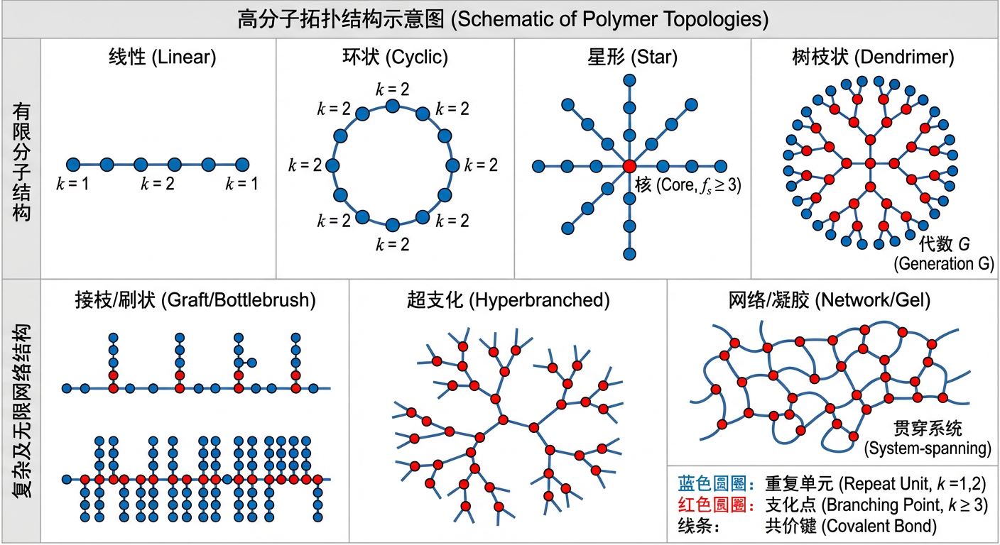
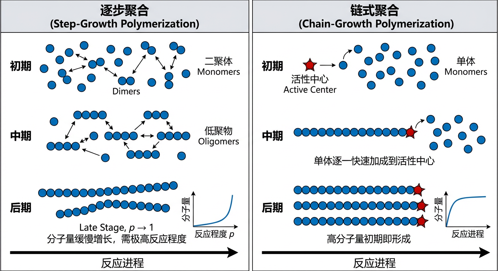
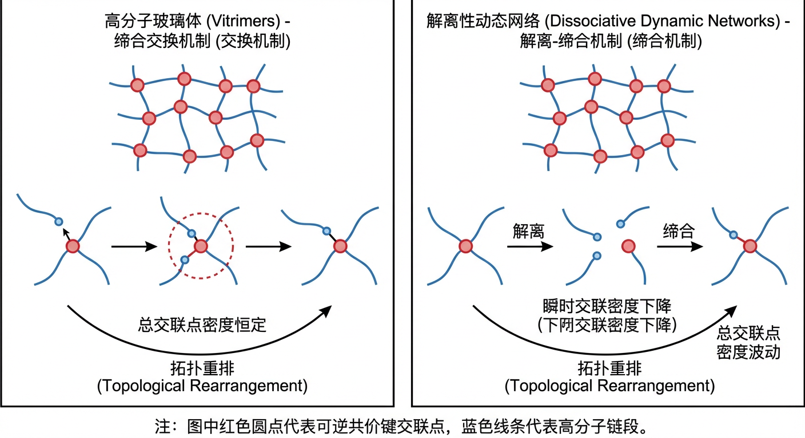
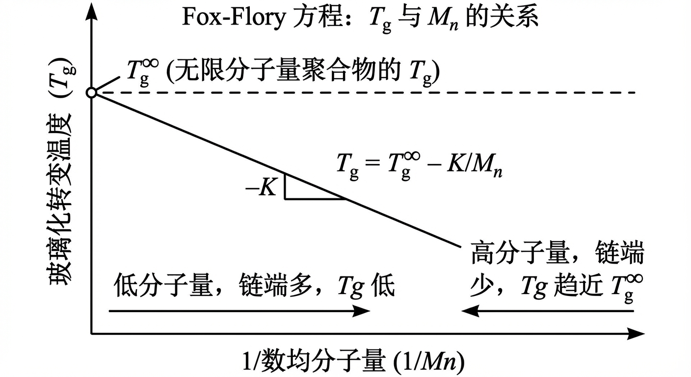
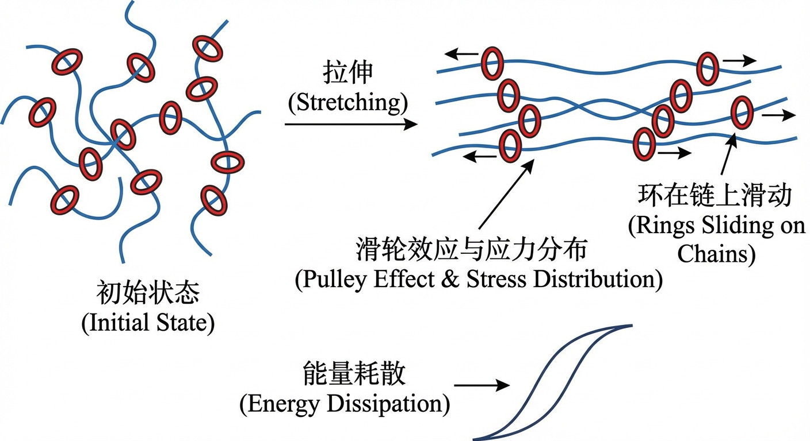
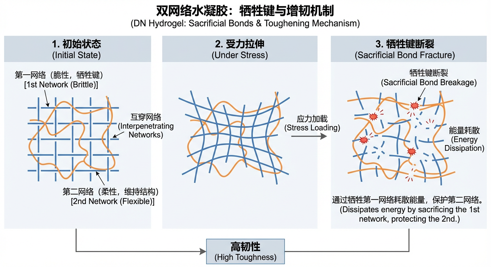
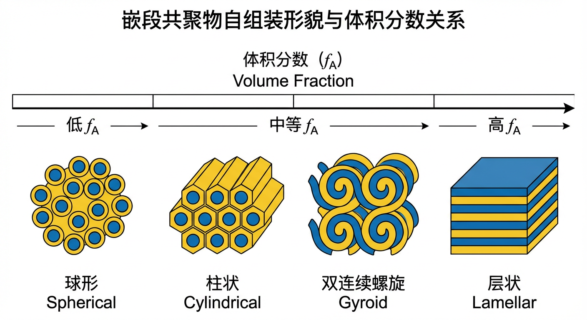
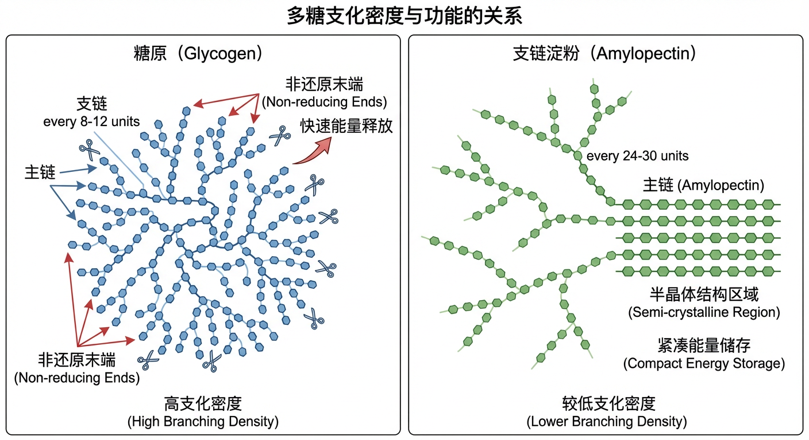

高分子材料无处不在，其性能千差万别，从坚韧的纤维到柔软的凝胶，其背后共通的设计原则在于对“结构（architecture）”的精确控制。高分子的结构，即其链的拓扑形态、单体序列和三维构象，是连接分子尺度化学合成与宏观尺度材料功能的关键桥梁。然而，理解并驾驭这种从分子到宏观的复杂关系，是高分子科学领域的核心挑战与魅力所在。
本文旨在系统性地阐述高分子结构的基本原理、合成策略及其对材料性能和功能的影响。我们将填补基础理论与前沿应用之间的知识鸿沟，为读者构建一个全面的认知框架。
在接下来的内容中，您将首先通过“原理与机制”一章，深入学习描述高分子结构的拓扑学语言，理解逐步聚合、链式聚合等核心合成方法如何塑造这些结构，并探究结构如何从根本上决定材料的玻璃化转变、流变行为等物理性质。随后，“应用与跨学科连接”一章将通过大量实例，展示这些原理如何在工程材料、纳米技术乃至生命科学等领域大放异彩，从高强度纤维到智能水凝胶，再到DNA和蛋白质等生命大分子。最后，“动手实践”部分将提供一系列理论与计算练习，帮助您巩固所学知识，将抽象概念应用于解决实际问题。通过这一结构化的学习路径，您将深刻理解如何通过设计高分子结构，来创造具有特定功能的未来材料。
本章旨在系统性地阐述高分子结构（architecture）的基本原理，并深入探讨控制这些结构的合成机制。我们将从拓扑学的角度对聚合物进行分类，进而揭示合成方法如何决定其最终形态，最后探讨这些多样的结构如何调控材料的宏观物理性质。
为了精确地描述和区分各种复杂的高分子结构，我们可以借助图论的语言。在此框架下，一个或一组大分子可以被抽象为一个无向图 $G=(V, E)$，其中顶点 $v \in V$ 代表重复单元，而边 $e \in E$ 代表连接这些单元的共价键。顶点的度 (degree)，记为 $k(v)$，即与该顶点相连的边的数量，它直接反映了该结构单元的连接性 。
最简单的结构是线性聚合物 (linear polymer)。在图论模型中，单个线性高分子链对应一个路径图 (path graph)。这是一个无环的连通图（即一棵树），其特征是：恰好有两个顶点的度为1，它们是链端 (chain ends)；所有内部顶点的度均为2。
当聚合物链的两个末端通过共价键连接时，便形成了环状（或称环形）聚合物 (ring/cyclic polymer)。其拓扑结构是一个环图 (cycle graph)，其中每个顶点的度都为2。从拓扑学上讲，它的圈数 (cyclomatic number) 为1，切断其中任意一条边都会使其转变为一条线性链 。
当结构中出现度大于2的顶点时，我们就进入了非线性聚合物的领域。这些 $k(v) \ge 3$ 的顶点被称为支化点 (branching points)。最普遍的非线性结构是支化聚合物 (branched polymer)。在凝胶化（见下文）之前，这些分子对应于图论中的树 (tree)——即无环的连通图。尽管它们可能具有很高的分子量和复杂的分支，但每个分子（即每个连通图）的大小都是有限的。
在支化聚合物中，几类具有高度规整性的结构尤为重要： - 星形聚合物 (star polymer)：它是一棵具有单一中心核的树。这个核是一个度 $k(v_0) = f_s \ge 3$ 的顶点，其中 $f_s$ 被称为核的官能度 (functionality)。从该核上伸展出 $f_s$ 条线性臂 。 - 树枝状大分子 (dendrimer)：这是一种通过逐代增长合成的、结构完美、单分散的树状大分子。理想的树枝状大分子没有环，其内部支化点的官能度在每一代都是精确固定的。其末端基团的数量随代数 $G$ 的增长呈指数级增加，例如，对于一个官能度为 $f_c$ 的核和支化官能度为 $f_b$ 的单体，第 $G$ 代的末端基团数量为 $N_{term} = f_c (f_b-1)^G$ 。 - 超支化聚合物 (hyperbranched polymer)：与树枝状大分子不同，超支化聚合物通常通过一锅法统计聚合（例如 $AB_2$ 型单体）制备。这导致其支化不完美，结构不规整，分子量呈多分散性（$PDI = M_w/M_n > 1$）。其支化度 (degree of branching, DB) 通常远低于理想树枝状大分子的 $DB=1$，理论上趋近于0.5 。
其他重要的非线性结构还包括： - 接枝共聚物 (graft copolymer)：它由一条线性的主链 (backbone) 和一些共价连接在主链上的侧链 (side chains) 组成。主链上连接侧链的那些顶点的度 $k(v) \ge 3$。 - 刷状聚合物 (bottlebrush polymer)：这是接枝共聚物的一个极限情况，即接枝密度非常高，几乎每个主链单元都连接着一条侧链。此时，大部分主链顶点的度 $k(v) \ge 3$ 。
最后，当支化点之间的连接不再局限于单个分子内部，而是贯穿整个宏观体系时，就形成了网络聚合物 (network polymer)，或称凝胶 (gel)。其拓扑学标志是在热力学极限下，出现了一个贯穿系统 (system-spanning) 的连通组分，即逾渗簇 (percolating component)。这个宏观尺度的分子包含了大量的支化点和环，其环的数量与体系的大小成正比。这与由有限尺寸的支化分子组成的“溶胶 (sol)”相区别 。

高分子结构的形成由其合成机制从根本上决定。两种最主要的聚合机制是逐步聚合 (step-growth polymerization) 和链式聚合 (chain-growth polymerization) 。
在逐步聚合中，体系中任何两个具有互补官能团的分子（无论是单体、二聚体还是更大的低聚物）都可以随时反应。分子量在整个反应过程中缓慢增长，只有在反应程度 $p$ 极高时（$p \to 1$）才能获得高分子量。这种机制下的结构控制主要依赖于单体的官能度 (functionality) $f$。 - 如果所有单体的官能度均为 $f=2$（例如，AA和BB型单体化学计量比精确相等），反应只能生成线性链。根据卡罗瑟斯 (Carothers) 方程，数均聚合度 $\bar{X}n = 1/(1-p)$，在 $p1$ 时，$\bar{X}_n$ 是有限的，无法形成网络 。 - 如果体系中引入了官néng度 $f > 2$ 的单体，使得体系的平均官能度 $f > 2$，那么在反应过程中就会形成支化结构。根据弗洛里-斯托克迈耶 (Flory-Stockmayer) 凝胶理论，当反应程度达到一个临界值——凝胶点 (gel point) $p_c$ 时，体系将发生溶胶-凝胶转变，形成宏观网络。例如，对于 $A_f + B_2$ 体系，凝胶点为 $p_c = 1/\sqrt{f_w-1}$，其中 $f_w$ 是重均官能度 。
在链式聚合中，首先通过引发剂产生一个活性中心 (active center)，然后单体单元逐一加成到这个活性中心的链端，使链快速增长。高分子量聚合物在反应初期就已经形成。 - 如果单体是单官能的（例如，一个乙烯基），那么在没有链转移和支化等副反应的理想情况下，每个活性中心只能引发一条线性链的生长 。 - 网络的形成则需要引入交联剂 (crosslinker)，即含有多个可聚合官能团的单体（例如，二乙烯基苯）。当一个交联剂分子上的一个官能团反应后，它被并入一条链中，而其另一个官能团则悬挂在链上。这个悬挂的官能团可以继续与另一条增长的链反应，从而在两条链之间形成一个交联点 (cross-link)，最终导致宏观网络的形成 。
除了控制支化和网络化，合成机制还能精确控制聚合物链上的单体序列，从而产生不同类型的共聚物 (copolymers)。 - 无规共聚物 (random copolymer)：两种或多种单体单元沿链呈统计随机分布。其序列可以通过一个伯努利过程来描述 。 - 交替共聚物 (alternating copolymer)：两种单体严格交替排列，如 A-B-A-B-...。 - 嵌段共聚物 (block copolymer)：由两种或多种长的、均一的单体序列（“嵌段”）共价连接而成，如 A-A-...-A-B-B-...-B。 - 梯度共聚物 (gradient copolymer)：其化学组成沿链长平滑地、单调地变化 。

共聚物的序列主要由共聚反应动力学决定。在基于末端模型的自由基共聚中，竞聚率 (reactivity ratios) $r_1 = k_{11}/k_{12}$ 和 $r_2 = k_{22}/k_{21}$ 描述了增长的自由基链末端（$M_1^\bullet$ 或 $M_2^\bullet$）优先与同种单体（$M_1$ 或 $M_2$）反应还是与异种单体反应的倾向性 。 - 当 $r_1 \approx r_2 \approx 1$ 时，链末端对两种单体没有选择性，倾向于形成无规共聚物。 - 当 $r_1 1$ 且 $r_2 1$ 时，两种链末端都倾向于与异种单体反应，从而形成交替序列。 - 当 $r_1 > 1$ 且 $r_2 > 1$ 时，两种链末端都倾向于与同种单体反应，导致形成具有“嵌段”特征的序列（blocky sequence）。
为了合成结构明确的复杂结构，如长程有序的嵌段共聚物或完美的星形聚合物，需要更精密的合成策略。活性/可控聚合 (living/controlled polymerization) 提供了一种强大的工具。其核心特征是：引发速率远大于增长速率（$k_i \gg k_p[M]$），且聚合过程中几乎没有链终止和链转移反应。这使得聚合物链的“活性”得以保持 。 这一特性使得通过顺序单体加料 (sequential monomer addition) 来构建嵌段共聚物成为可能。例如，可以先聚合单体A，待其几乎完全耗尽后，再加入单体B进行聚合，得到AB双嵌段共聚物。若接着再加入单体A，则可得到ABA三嵌段共聚物。原则上，通过重复此过程可以合成任意序列的多嵌段共聚物。每个嵌段的长度可以通过控制该步骤中消耗的单体量与活性中心（引发剂）的摩尔比来精确预测 。
除了活性聚合，另一类用于构筑复杂结构的高效工具是“点击化学” (click chemistry)。这类反应的特点是：具有很高的化学选择性（正交性）、极高的产率（接近100%）、反应条件温和且副产物极少或没有。这种近乎完美的反应效率对于合成官能度高的复杂结构至关重要。例如，要合成一个四臂星形聚合物，需要一个四官能度的核与四条臂完全反应。如果单点反应的转化率为 $p$，那么得到完美四臂产物的概率为 $p^4$。当 $p$ 从0.90提高到0.98时，完美产物的产率从 $(0.90)^4 \approx 0.66$ 跃升至 $(0.98)^4 \approx 0.92$。这种对反应转化率的指数级敏感性凸显了点击化学在高保真度大分子工程中的巨大优势 。
传统的聚合物由稳定的共价键连接，其拓扑结构是固定的。然而，自然界和合成化学中也存在大量结构可以动态变化的聚合物体系。
超分子聚合物 (supramolecular polymers) 是通过可逆的、定向的非共价相互作用（如氢键、金属-配位、$\pi-\pi$堆积）将单体组装而成的聚合体。其结构是一种热力学平衡态，因此其聚合度和拓扑结构都受质量作用定律的支配，并对外界条件（如浓度 $c$、温度 $T$、溶剂）敏感 。 - 对于双官能度的超分子单体，它们可以形成线性和环状两种拓扑结构。两者之间的平衡由雅各布森-斯托克迈耶 (Jacobson-Stockmayer) 理论描述。分子内的成环反应是单分子过程，其倾向性由一个与浓度无关的有效摩尔浓度 (effective molarity, EM) 决定；而分子间的链增长是双分子过程，依赖于整体浓度 $c$。当 $c > \text{EM}$ 时，体系以线性链为主；稀释溶液使 $c \text{EM}$ 时，平衡将向环状物种移动 。 - 当超分子单体的平均官能度 $f_{avg} > 2$ 时，它们可以通过可逆的非共价键形成三维网络，即超分子凝胶 (supramolecular gel)。与共价网络类似，其形成也遵循逾渗理论，当键合程度 $p$ 超过临界值 $p_c = 1/(f_{avg}-1)$ 时就会发生凝胶化。由于 $p$ 是缔合平衡常数 $K$ 和浓度 $c$ 的增函数，因此增加浓度或降低温度（通常会增大 $K$）都可以诱导凝胶的形成 。
另一类动态网络是共价自适应网络 (covalent adaptable networks, CANs)，其交联点是可逆的共价键。根据键交换机制的不同，可以分为两类： - 高分子玻璃体 (vitrimers)：其网络重排通过缔合交换机制 (associative exchange mechanism) 进行。在此过程中，旧键的断裂与新键的形成是协同发生的，因此网络的总交联点密度在拓扑重排过程中保持恒定。这种特性使得材料在保持网络完整性的同时，能够像液体一样流动，从而实现应力松弛 。 - 解离性动态网络 (dissociative dynamic networks)：其键交换通过解离-缔合机制 (dissociative-associative mechanism) 进行。交联键的断裂和重组是两个独立的步骤。这意味着在任何时刻，体系的瞬时交联密度都是波动的。应力松弛主要通过交联点的解离来实现，如果解离速率大于重组速率，网络可能暂时或永久性地失去其贯穿性，从凝胶态转变为溶胶态 。

高分子独特的物理性质从根本上源于其链状结构和复杂的拓扑形态。
玻璃化转变温度 ($T_g$) 是非晶态聚合物最重要的特性之一，标志着材料从硬而脆的玻璃态转变为软而韧的橡胶态的温度。从分子层面看，这对应于大尺度链段运动的冻结与解冻。根据自由体积理论 (free-volume theory)，$T_g$ 是体系的自由体积分数降低到某个临界值时的温度。
链的拓扑结构对 $T_g$ 有显著影响。一个关键因素是链端 (chain ends)。链端比链中段具有更高的活动性和更低的堆积效率，因此会引入额外的自由体积。对于线性链，链端浓度与数均分子量 $M_n$ 成反比。因此，分子量越低，链端越多，自由体积越大，需要冷却到更低的温度才能使链段运动冻结，即 $T_g$ 越低。这一关系通常由 Fox-Flory 方程 描述：$T_g = T_g^\infty - K/M_n$，其中 $T_g^\infty$ 是无限分子量聚合物的 $T_g$ 。
支化结构对 $T_g$ 的影响则更为复杂，是两种效应竞争的结果： 1. 链端效应：在相同的 $M_n$ 下，一个 $f$ 臂星形聚合物比线性聚合物拥有更多的链端（$f$ 个 vs. 2个）。更多的链端意味着更多的自由体积，从而有降低 $T_g$ 的趋势。 2. 支化点约束效应：支化点是多个长链的连接枢纽，其存在会极大地限制周围链段的运动。这种拓扑约束会阻碍链的松弛，从而有提高 $T_g$ 的趋势。
这两种效应的主导作用取决于分子量。在低分子量（$M_n \ll M_e$，其中 $M_e$ 为缠结分子量）区域，链端效应占主导，因此星形聚合物的 $T_g$ 通常低于相同 $M_n$ 的线性聚合物。而在高分子量（$M_n \gg M_e$）区域，链端浓度已经很低，支化点的约束效应变得更加重要，导致星形聚合物的 $T_g$ 反而高于线性聚合物 。
当聚合物链足够长（$M_n \gg M_e$）时，它们在熔体中会像意大利面一样相互穿插、缠绕，形成拓扑约束，即缠结 (entanglements)。这些缠结点的作用类似于暂时的物理交联点，赋予熔体在特定时间尺度上类似橡胶的弹性。
在黏弹性谱中，这种弹性表现为一个橡胶平台区 (rubbery plateau)，其对应的剪切模量被称为平台模量 ($G_N^0$)。平台模量是衡量材料缠结网络密度的宏观指标。根据橡胶弹性理论，平台模量与单位体积内的弹性链（即缠结链段）数量成正比。将缠结网络中的链段平均摩尔质量定义为缠结分子量 ($M_e$)，我们可以得到一个核心关系式 ： $$ G_N^0 = \frac{\rho R T}{M_e} $$ 其中 $\rho$ 是熔体密度，$R$ 是气体常数，$T$ 是绝对温度。这个公式深刻地揭示了宏观力学性质 ($G_N^0$) 与微观拓扑结构参数 ($M_e$) 之间的直接联系。$M_e$ 是聚合物化学结构的内禀属性，反映了链的刚性和空间位阻，而 $G_N^0$ 则是可以直接测量的材料常数。
高分子结构的改变也会影响其与其他组分混合时的热力学行为。Flory-Huggins理论 是描述高分子共混物热力学的基础框架。混合自由能 $\Delta F_{mix}$ 主要由两部分贡献：组合熵和相互作用能。后者由无量纲的 Flory-Huggins相互作用参数 ($\chi$) 表征，它衡量了不同种链段间接触与同种链段间接触的能量差异。
经典的Flory-Huggins理论假设链段在晶格中是随机混合的，没有考虑链内相关性。然而，聚合物的拓扑结构会强烈影响链段的局部堆积和分布。例如，与相同分子量的线性链相比，星形聚合物的链段由于被束缚在一个中心核上，其内部链段浓度更高，分子内的相关性更强。这意味着星形聚合物的链段更倾向于与自身的其他链段接触，而不是与另一组分的链段接触。这种由结构引起的非随机混合效应，会改变体系的有效相互作用，使得从实验（如散射或相行为）中测得的 $\chi$ 参数成为一个有效相互作用参数 ($\chi_{eff}$)，它不仅依赖于化学组成，还依赖于聚合物的结构 。此外，在更精细的理论中，结构对堆积效率和自由体积的影响，也会体现在 $\chi$ 参数的熵贡献部分，从而影响其对温度的依赖关系 。
在前几章中，我们已经系统地探讨了聚合物结构的核心原理与机制，涵盖了从线性链到复杂网络的不同类别与构型。这些基本原理为我们理解聚合物材料的行为奠定了理论基础。然而，聚合物科学的真正魅力在于其将这些基础知识转化为实际应用的能力。聚合物的结构并非一个抽象的概念，而是工程师和科学家用来精确调控材料性能、创造新功能、乃至模拟和理解生命过程的强大工具。
本章旨在搭建一座桥梁，连接聚合物结构的理论世界与广阔的应用领域。我们将不再重复介绍核心概念，而是通过一系列面向应用的实例，展示这些原理如何在材料科学、纳米技术、生物化学和前沿科技等不同学科中被运用、拓展和融合。我们将看到，通过对聚合物一维序列、三维构象和网络拓扑的精心设计，可以创造出具有特定机械性能、界面行为和生物功能的先进材料。从可穿戴电子设备中的柔性基板，到能够修复自身的“智能”凝胶，再到构成生命体的复杂生物大分子，聚合物结构无处不在，并扮演着核心角色。通过本章的学习，读者将深刻体会到，聚合物结构是连接分子设计与宏观功能的关键，是推动跨学科学术创新与技术进步的引擎。
聚合物结构是调控材料宏观机械性能最直接、最有效的手段。通过对链的线性度、支化、交联以及不同嵌段的组合进行精确控制，可以设计出从超高强度纤维到超柔、高韧性弹性体的各类材料。
高强度纤维
合成纤维的强度在很大程度上取决于其分子链的排列方式。为了制造出具有极高拉伸强度的纤维，例如用于防护装备或航空航天领域的纤维，其聚合物前体必须具有高度规整、无支链的线性结构。这类聚合物在熔融纺丝后，可以通过一个称为“拉伸（drawing）”的过程进行处理，即在单轴方向上将其拉伸至原始长度的数倍。在此过程中，线性链能够解开缠结、相互平行排列并紧密堆积，形成高度取向的晶区。这种有序的、几乎完全伸展的链状结构能够有效地将外加载荷沿着纤维轴向传递，从而赋予材料卓越的拉伸强度和模量。相比之下，具有支链、不规整立构或交联结构的聚合物则无法实现如此高效的链排列和结晶，因为这些结构缺陷会阻碍链的滑动和紧密堆积，从而限制了材料最终所能达到的强度。
压敏胶与物理交联
与追求极致强度的纤维相反，压敏胶（Pressure-Sensitive Adhesives, PSAs）等应用则需要材料兼具流动性（粘性）和内聚强度（弹性）的微妙平衡。这种独特的粘弹性通常通过嵌段共聚物的结构设计来实现。一个典型的例子是，使用一种由“软”嵌段和“硬”嵌段组成的A-B型嵌段共聚物。其中，软嵌段通常是玻璃化转变温度（$T_g$）远低于室温的聚合物，如聚丁二烯或聚异戊二烯，它构成了连续的橡胶相，赋予胶体在轻微压力下流动和浸润表面的能力，即“粘性”。而硬嵌段则是$T_g$远高于室温的聚合物，如聚苯乙烯。由于热力学上的不相容性，这些硬嵌段会自组装成纳米尺度的玻璃态微区，分散在柔软的橡胶基体中。这些坚硬的玻璃态微区起到了物理交联点的作用，有效地连接了不同的聚合物链，提供了抵抗剥离和剪切所必需的内聚强度。这种通过结构设计在纳米尺度上实现相分离，从而同时获得粘性和强度的策略，是嵌段共聚物在高性能胶粘剂领域应用的核心。
高韧性网络：牺牲键与滑环机制
在水凝胶等软材料领域，同时实现高强度和高韧性是一个巨大的挑战。传统的化学交联网络在断裂时，能量集中于裂纹尖端，导致材料易于脆性断裂。双网络（Double-Network, DN）水凝胶的结构设计为解决这一问题提供了巧妙的方案。典型的DN水凝胶由两种拓扑互穿但化学上不键合的聚合物网络构成：第一网络是短链、高度交联的“脆性”网络，而第二网络则是长链、稀疏交联的“柔性”网络。当材料受力时，应力首先由更刚硬的第一网络承担。在裂纹尖端的高应力区，第一网络的短链会优先断裂，这个过程被称为“牺牲键”断裂。共价键的断裂耗散了大量的能量，从而有效地钝化了裂纹尖端。与此同时，保持完整的第二柔性网络则负责维持材料的整体结构，并将应力分散到更大的区域。这种通过牺牲一个网络来保护另一个网络的协同机制，使得DN水凝胶能够耗散比单个网络多数百倍的能量，从而表现出非凡的断裂韧性。

另一种实现高韧性的创新结构是基于机械互锁结构的聚轮烷（polyrotaxane）滑环网络。在这种网络中，聚合物链穿过一系列大环分子（“环”），而这些环则作为可移动的交联点。与化学键固定的交联点不同，这些环可以在聚合物链上自由滑动。当材料受到拉伸时，网络中的链会通过环的滑动来重新分布应力，这一过程类似于滑轮系统。链的滑动会产生摩擦，这是一种高效且可逆的能量耗散途径。因此，在循环加载-卸载过程中，滑环网络会表现出显著的滞后环，这意味着大量的能量在变形过程中被耗散掉了，从而赋予材料高韧性。更重要的是，这种能量耗散机制不涉及共价键的断裂，因此是完全可逆的，使得材料在经历大变形后仍能恢复其原始性能。

聚合物结构不仅决定了材料的宏观性能，还在控制物质的纳米级排列和界面行为方面发挥着至关重要的作用。通过设计嵌段、接枝和序列，可以在纳米尺度上构建有序结构，并调控不同组分间的相互作用。
嵌段共聚物是由两种或多种化学性质不同的聚合物链段（嵌段）通过共价键连接而成的。当不同嵌段之间存在热力学不相容性时（通常用Flory-Huggins相互作用参数 $\chi$ 来量化），它们会倾向于相互排斥。然而，由于嵌段被共价键束缚在一起，它们无法像简单的聚合物共混物那样发生宏观相分离，而只能在纳米尺度上进行微相分离。其结果是形成各种高度有序的纳米结构，如球形、柱状、双连续螺旋（例如，gyroid）和层状（lamellae）等。
最终形成的平衡形貌主要由各嵌段的体积分数（$f_A$）决定，因为它决定了不同相的几何约束。而 $\chi$ 与总聚合度 $N$ 的乘积 $\chi N$ 则决定了相分离的强度。在强相分离极限下（$\chi N \gg 10$），界面变得非常清晰。聚合物的分子结构也对相图有显著影响。例如，与 A-B 两嵌段共聚物相比，A-B-A 三嵌段共聚物中的中心 B 嵌段可以形成“桥联”构象，即其两端连接到两个相邻的 A 域中。在层状结构中，这种桥联构象的链拉伸惩罚远小于两嵌段的末端链，因此极大地稳定了层状相，使其在更宽的组分范围内成为优势相。这种通过结构设计精确控制纳米结构的能力，已广泛应用于纳米光刻、高性能热塑性弹性体和膜分离等领域。

在多组分聚合物体系中，结构同样扮演着界面调控者的角色。例如，在不相容的聚合物共混物中，直接混合通常会导致粗大的相畴和脆弱的界面，从而使材料性能劣化。为了改善相容性，可以添加少量嵌段或接枝共聚物作为“相容剂”。这些共聚物会迁移到两相界面处，其不同的链段分别伸入到各自亲和的聚合物相中，通过链缠结将两相“缝合”在一起，从而降低界面张力，增强界面粘附，细化相畴尺寸，最终提升共混物的力学性能。
在聚合物纳米复合材料中，聚合物基体的结构直接影响着纳米填料的分散状态和最终性能。例如，在一个由非吸附性线性聚合物链构成的基体中，当两个裸露的纳米颗粒相互靠近时，它们之间的聚合物链会被排空，产生所谓的“耗尽吸引力”（depletion attraction），这会促进颗粒聚集，从而可能在较低的全局体积分数下达到逾渗阈值（$\phi_c$）。相反，如果在纳米颗粒表面接枝上致密的聚合物刷，这些刷链会在颗粒间产生强烈的空间位阻排斥，阻止颗粒聚集，从而提高逾渗阈值。更有趣的是，可以利用嵌段共聚物的自组装结构来“模板化”纳米颗粒的排布。如果纳米颗粒选择性地分布在嵌段共聚物的一个连续相畴中，那么它们在该相畴内的局部浓度会远高于其在整个材料中的平均浓度，从而能以极低的全局添加量实现逾渗，这为制备高性能导电或导热复合材料提供了有效途径。
聚电解质复合物
当聚合物链带有电荷时，静电相互作用便成为驱动其组装的关键力量。一个典型的例子是带有中性亲水嵌段的嵌段聚电解质与带相反电荷的均聚电解质在水溶液中混合。这两种大分子会通过静电吸引形成一种称为“复凝聚核胶束”（Complex Coacervate Core Micelles, C3Ms）的纳米结构。其核心是由两种带相反电荷的聚合物形成的复凝聚相，而嵌段聚电解质的中性亲水嵌段则伸展到水相中，形成一个溶剂化的“冠”，提供空间位阻稳定性，防止胶束进一步聚集成宏观沉淀。
这种组装的主要驱动力并非仅仅是静电吸引的焓贡献，更重要的是熵的增加。根据Manning的抗衡离子凝聚理论，对于高电荷密度的聚电解质（即电荷间距 $b$ 小于Bjerrum长度 $l_B$），其周围的抗衡离子会“凝聚”在聚合物链上，以降低体系的静电能。当两条带相反电荷的聚合物链相互靠近并形成复合物时，这些原本被束缚在各自链周围的抗衡离子会被释放到本体溶液中，导致体系的平动熵大幅增加。这种熵增益是驱动复凝聚过程的主要热力学动力。C3Ms的核是富含水的，这与由疏水效应驱动的传统表面活性剂胶束的“油性”核心有本质区别。这类结构在药物递送、基因治疗和食品科学等领域具有重要应用。

自然界是聚合物结构设计的终极大师。从DNA的双螺旋到蛋白质的精确折叠，再到细胞骨架的动态网络，生命过程的每一个层面都深刻地依赖于生物大分子的特定结构。本节将探讨几种典型的生物聚合物，揭示其结构与功能之间的精妙联系。
结构与储能生物聚合物
细胞外基质（Extracellular Matrix, ECM）是生物组织中的“脚手架”，它本身就是一种精密的多组分、多层次聚合物复合材料。在结缔组织中，ECM的主要组分各自扮演着独特的力学角色。其中，I型和III型等纤维状胶原蛋白（fibrillar collagens）通过三螺旋结构组装成原纤维，再进一步组装成纤维束，为组织提供主要的抗拉伸强度和应变硬化能力。弹性蛋白（elastin）则通过共价交联形成一个可伸展的网络，赋予组织（如皮肤、血管）熵弹性的能力，使其能够在大变形后恢复原状。与此同时，蛋白聚糖（proteoglycans）的聚糖链（GAGs）上带有大量的负电荷，通过唐南渗透效应（Donnan osmotic effect）吸附抗衡离子和水，产生巨大的溶胀压力，从而抵抗压缩载荷。粘连糖蛋白（如纤连蛋白 fibronectin）则像胶水一样，连接着细胞和基质的各个组分，组织着整个网络的结构。这种不同结构聚合物的协同作用，使得ECM能够应对复杂的力学环境。值得注意的是，基底膜（basal lamina）是一种特殊的片状ECM，其主要由IV型网状胶原蛋白和层粘连蛋白（laminin）构成，缺乏纤维状胶原蛋白和弹性蛋白，其结构赋予了它选择性过滤和支持上皮细胞极性的独特功能。
在能量储存方面，结构同样决定功能。淀粉（主要成分为支链淀粉 amylopectin）和糖原（glycogen）都是葡萄糖的聚合物，用于储存能量。它们都由 $\alpha(1\rightarrow4)$ 糖苷键形成主链，并由 $\alpha(1\rightarrow6)$ 糖苷键形成支链。$\alpha(1\rightarrow4)$ 键的构象偏好使得主链天然地呈现螺旋状。两者最关键的结构差异在于支化密度。糖原的支化密度非常高（约每8-12个残基一个分支），这创造了大量的非还原末端。这些末端是糖原磷酸化酶等代谢酶的作用位点，因此高支化密度使得葡萄糖单元能够被快速地动员和释放，以满足动物机体瞬时的高能量需求。相比之下，支链淀粉的支化密度较低（约每24-30个残基一个分支），其较长的线性链段能够排列形成半晶体结构，从而在植物中实现更紧凑的能量储存。

功能性生物聚合物组装体
生物大分子的功能不仅取决于单链的折叠，还取决于它们如何组装成更高阶的复合物。免疫球蛋白（抗体）就是一个绝佳的例子。大多数抗体亚型（如IgG, IgE）以单体形式存在，而IgM和IgA则能够分别形成五聚体/六聚体和二聚体。这种聚合能力并非偶然，而是由其重链C末端一段特定的氨基酸序列——“分泌尾片”（secretory tailpiece）所决定的。这个尾片在IgM和IgA中存在，但在IgG等亚型中缺失。尾片上包含一个保守的半胱氨酸残基，它能够与一个称为J链（Joining chain）的小蛋白发生二硫键交联，从而将多个抗体单体共价连接在一起。这种由特定序列“编码”的聚合结构对其生物学功能至关重要：IgM五聚体的高价态（10个抗原结合位点）使其具有极强的亲合力（avidity），而IgA二聚体则能通过与多聚免疫球蛋白受体（pIgR）结合，被转运穿过上皮细胞层，在粘膜表面发挥关键的防御作用。
粘液是覆盖在消化道、呼吸道等粘膜表面的重要物理屏障，其主要结构成分是凝胶形成性粘蛋白（gel-forming mucins），如MUC2。MUC2是一种巨大的糖蛋白，其肽链骨架通过C末端和N末端的富含半胱氨酸的结构域发生二硫键交联，形成巨大的支化网络。其肽链上大部分区域是密集的O-糖基化位点，这些聚糖链末端带有大量的唾液酸和硫酸基团，使整个分子成为一个强聚电解质。在分泌前的细胞颗粒中，高浓度的钙离子和酸性环境（低pH）通过屏蔽和桥接负电荷，使粘蛋白处于高度浓缩、折叠的状态。当细胞分泌时，环境变为中性pH和低钙离子浓度，静电排斥力急剧增加，导致粘蛋白网络迅速溶胀数千倍，形成具有特定粘弹性的水凝胶。这个由复杂共价结构和聚电解质性质共同决定的精妙网络，通过其筛孔尺寸和粘附性，有效地捕获和清除病原体，构成了先天免疫的第一道防线。
聚合物结构的概念正不断扩展，并与信息科学、可持续化学、能源材料和计算科学等前沿领域深度融合，催生了新的研究范式和技术机遇。
用于信息存储的聚合物
将聚合物用作信息载体的想法由来已久，DNA便是自然界最完美的范例。在合成聚合物领域，一个关键的区别在于“序列定义聚合物”和“统计共聚物”。统计共聚物是通过随机共聚反应制备的，其单体序列由反应动力学和单体投料比决定，本质上是随机的。而序列定义聚合物则通过逐步合成法（如固相合成）制备，可以像编写代码一样，在聚合物链的每一个位置上精确地放置预设的单体。
从信息论的角度看，由 $M$ 种单体构成的序列定义聚合物，其信息存储密度可达每个单体 $\log_2(M)$ 比特。而对于统计共聚物，其信息密度由香non熵决定，并且总是低于序列定义聚合物。更重要的是，对序列的精确控制使得设计具有高度特异性分子识别功能的聚合物成为可能。如同酶的活性位点需要特定氨基酸的精确空间排布，高级的分子识别功能也依赖于功能基团在聚合物链上的精确位置。这种从“统计”到“定义”的转变，为构建具有生物功能的仿生材料和分子机器人开辟了道路。
可持续与可循环利用的网络
传统的交联聚合物，即热固性材料，由于其永久性的共价交联网络，一旦成型便难以回收和再加工。为了解决这一问题，动态共价网络应运而生。这类网络中的交联键是可逆的或可交换的。其中一类重要的动态网络是“类玻璃高分子”（vitrimers），它们属于缔合型（associative）动态网络。在高温下，其网络中的交联键可以通过交换反应（如酯交换反应）重排拓扑结构，而总的交联密度保持不变。这使得材料能够像热塑性塑料一样流动、被焊接或热压成型，冷却后又能恢复其交联网络的力学性能。另一类是解离型（dissociative）动态网络，其交联键在加热时会可逆地断裂。如果断裂程度足够高，使得体系低于凝胶点，那么整个网络就会分解成可溶的低聚物，从而实现化学回收。这两种不同的动态结构策略，为设计可循环、可修复、可持续的下一代高性能聚合物材料提供了全新的思路。
电子与能源领域的聚合物
在功能材料领域，聚合物结构同样扮演着关键角色，特别是在需要兼顾功能性与加工性或力学性能的场合。以热电材料为例，其功能是将热能与电能相互转换。传统的无机半导体材料，如碲化铋（$\text{Bi}_2\text{Te}_3$），具有很高的热电优值（$zT$），即转换效率高，但它们通常是坚硬、易碎的晶体，难以加工成柔性器件。相比之下，导电聚合物虽然目前的热电效率普遍较低，但它们具有卓越的机械柔韧性、轻质以及可溶液加工的优点。这些特性使得它们成为制造可穿戴电子设备、柔性传感器和便携式能量收集装置的理想候选材料。这个例子清晰地表明，在实际应用中，由聚合物结构决定的力学性能和加工性能，往往与材料本身的核心功能性同等重要，需要在设计中进行权衡。
随着人工智能的发展，我们正进入一个可以从序列预测结构的新时代。对于蛋白质，AlphaFold2等模型已经取得了革命性的成功，其核心在于利用多序列比对（MSA）提取的共进化信息。然而，对于缺乏进化历史的新型合成聚合物，这一方法不再适用。将这些强大的深度学习模型应用于新的聚合物体系，需要深刻理解聚合物的结构原理。这包括：构建能够处理单序列输入的模型主干；设计在三维欧几里得群SE(3)变换下保持不变的损失函数，以确保预测与物理现实一致；使用内坐标（如扭转角）而非笛卡尔坐标来参数化结构，以硬性地施加化学键长和键角的约束；以及在损失函数中加入能够区分手性（如符号体积项）的项，以正确预测具有手性骨架的聚合物的立体构型。这些计算策略的发展，将极大地加速新聚合物材料的发现与设计过程，实现从序列到功能的正向工程。
本章通过一系列跨越不同学科的实例，展示了聚合物结构作为一种核心设计语言的普适性和强大功能。我们看到，无论是通过控制线性链的规整度来制造高强度纤维，还是利用嵌段共聚物创造兼具粘性和弹性的胶粘剂；无论是通过设计双网络和滑环结构来实现超高韧性，还是利用分子自组装在纳米尺度上构建有序图案；无论是从细胞外基质和糖原等生物大分子中汲取灵感，还是为信息存储和可持续发展设计全新的动态网络，其背后的核心思想都是相通的：聚合物的宏观功能根植于其在不同尺度上的精确结构。对这些结构-性能关系的深刻理解，是推动材料科学、化学、物理学和生物学交叉融合，并最终解决现实世界挑战的关键所在。